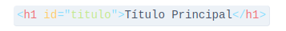
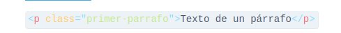
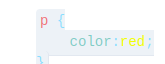
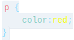
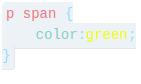

1.1- ¿Qué significa CSS?
1.1- el css significa hojas de estilo en cascada
1.2- ¿Para qué sirve el CSS? ¿Qué programa se utiliza para interpretar el CSS? (es para 🧠)
es el codigo que se utiliza para dar estilo a tu pagina web y cambiar el aspecto visual de la pagina.
1.3- ¿A qué se llama regla de CSS?
Las Reglas Condicionales es un módulo de CSS que permite definir un conjunto de reglas que solo aplicarán con base en las capacidades del procesador o del documento al cual la hoja de estilos está siendo aplicada.
1.4- ¿Cuál es la anatomía de la regla de CSS? Agregar imagen explicativa y utilizando una lista descriptiva explicar sus elementos.

- selector
- selecciona el(los) elemento(s) a dar estilo (en este caso, los elementos
). Para dar estilo a un elemento diferente, solo cambia el selector.
- Declaración
- aplica las propiedades que querés dar al elemento seleccionado en el Selector. En este caso hay una sola regla, pero puede haber más.
- Propiedades
- es lo que te permite dar un estilo a un elemento HTML. En el ejemplo la propiedad es color que le dará color a las letras de los párrafos. Siempre las propiedades se ubicarán a la izquierda.
- Valor de la propiedad
- las propiedades deben tener un valor. Cada propiedad tiene valores definidos. Cada valor se ubicará a la derecha.
1.5- ¿Qué es un selector en CSS?
El CSS tendrá diferentes tipos de selectores, un selector nos permitirá aplicar estilos a elementos específicos de HTML. De esta forma es posible ser preciso al momento de aplicar diseño a un sitio web. Ya sabemos que en un documento HTML podemos contener muchas etiquetas iguales pero con contenido distinto.
1.6- Identificar y definir los selectores: de ID, de clases, universal, de etiquetas, descendente.
- selector de ID
- Este tipo de selector es igual al de clase, aunque lo aplicaremos a un único elemento HTML de nuestra página. Esto se debe a que el atributo ID de HTML identifica a un elemento HTML por medio de un nombre. Por ejemplo: 
- selector de clases
- Los selectores de clases comienzan siempre por un . (punto). Los clientes web (navegadores) identifican
este punto y lo distinguen del resto de los selectores.
Por ejemplo:  - selector universal
- Nos permite aplicar estilos a todos los elementos HTML de un documento y se indica mediante el *. 
- selector de etiquetas
- Aplicamos propiedades CSS a una etiqueta. La misma se identifica sin utilizar simbolo mayor ni el menor. Por ejemplo. 
- selector descendente
- Con este selector seleccionamos un elemento que está dentro de otro del mismo tipo. Estos seectores
siempre están formados por dos o más selectores separados entre si. El último selector será el elemento
HTML al que se le aplicará las propiedades de CSS.
Por ejemplo: 
1.7- Explicar brevemente utilizando una lista ordenada: ¿cómo funciona el CSS?
- el navegador carga el html
- el html es convertido en un "DOM", el DOM es el que almacena el documento en la memoria del documento
- lo que hace el navegador es buscar todo lo que esta vinculado con el documento, como por ejemplo las imagenes o videos que se encuentran en el documento.
- cuando el navegador analiza el css, lo que hace es es ordenar en cubos las reglas dependiendo el tipo de selector, segun el tipo de selector, se aplican las reglas y los nodos a los DOM.
- luego de aplicarse las reglas el arbol de renderizacion genera la estructura, donde posteriormente apareceran los nodos
- aca esta la demostracion del aspecto visual de la pagina:

1.8- ¿Cuáles son las tres formas para vincular CSS con HTML?
inline
style
link
Ingrese al sitio CSS Zen Garden http://www.csszengarden.com y analicemos el código HTML siguiendo los siguientes pasos: Hacer clic en View All Designs Elegir dos diseños y abrirlo en pestañas distintas En el primer diseño presiona ctrl+u (esta combinación de teclas permite ver el código HTML en el navegador)
css zen garments css zen gardentstienen la misma estructura, solo cambia el css, es decir que pueden tener distintos diseños
| propiedad | descripcion | valores posibles |
|---|---|---|
| color | define el color de texto | color:GREEN, BLUE, BROWN |
| background-color | Define el color de fondo de un elemento | background-color: RED, BLUE, GREEN |
| font-size | define el tamaño de la fuente del texto | small, medium, large |
| font-weight | Define el grosor de la fuente del texto (por ejemplo, si se trata de texto en negrita o normal) | bold, bolder, lighter |
| font-style | Define el estilo de la fuente del texto (por ejemplo, si es cursiva o normal) | oblique, initial, normal |
| font-family | Define el tipo de letra a utilizar para el texto. | courier new, courier, mono space |
| text-align | Define la alineación horizontal del texto (izquierda, centro o derecha) | start, end, center |
| text-deration | Define la decoración del texto (por ejemplo, si está subrayado o tachado). | current, solid, none |
| text-transform | Define la transformación del texto (por ejemplo, en mayúsculas o minúsculas) | uppercase, lowercase, full width |
| letter-spacing | Define el espacio entre letras. | 3px, 0,3px, inherit |